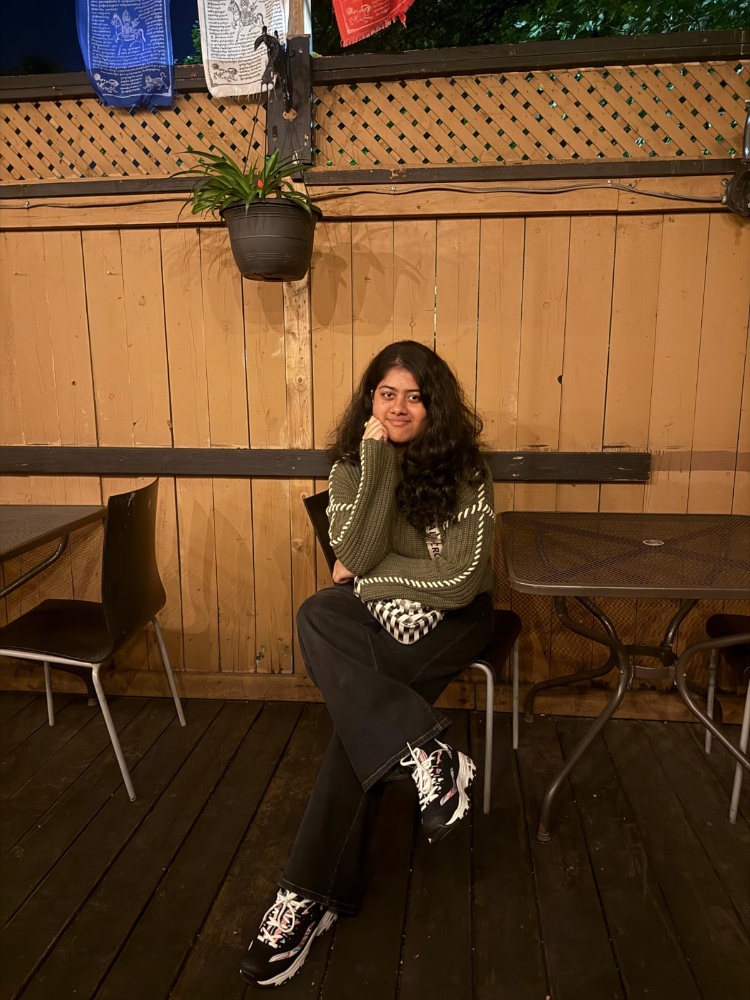

MARULA GAMBHIR
Web Development Student | Front-end Develop in Training
About Me
Hi there! I’m Marula Gambhir, currently studying Web Programming at Humber College, North Campus. It’s my first semester here, and I’m already loving every bit of learning how HTML, CSS, and JavaScript come together to build creative and interactive websites.
I’m passionate about designing user-friendly, visually appealing web pages that make a lasting impression — it’s where my logical side meets my artistic one. Ever since I was a kid who loved to draw, I’ve been fascinated by art. Now, I’ve simply swapped my sketchbook for a keyboard — because who knew you could create art using code too? 🎨💻
When I’m not busy coding or experimenting with layouts, you’ll probably find me dancing, cooking, or playing badminton (I’ve even competed at the regional level! 🏸). These activities keep me balanced — they’re my favorite way to shake off stress and recharge my creativity.
I’m excited to continue growing my skills, explore the world of web development in depth, and get as many opportunities as possible to keep creating this fun blend of art and logic that I truly enjoy.
Learn more
If you are a beginner and want to learn about the Web Development from the very start, Please visit this link: MDN Web Docs.